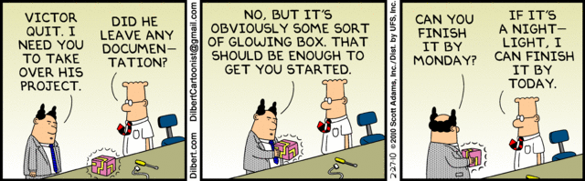
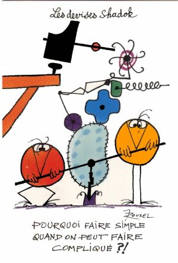
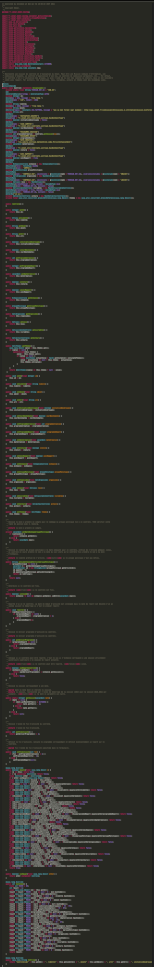
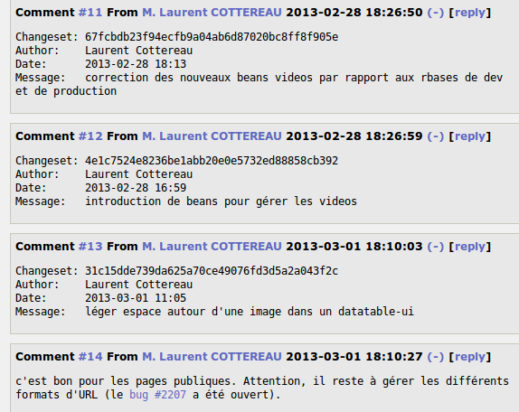
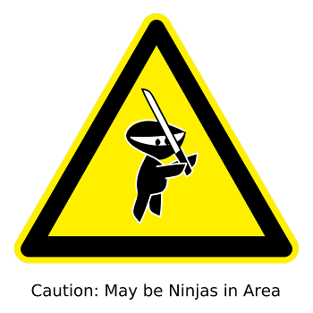
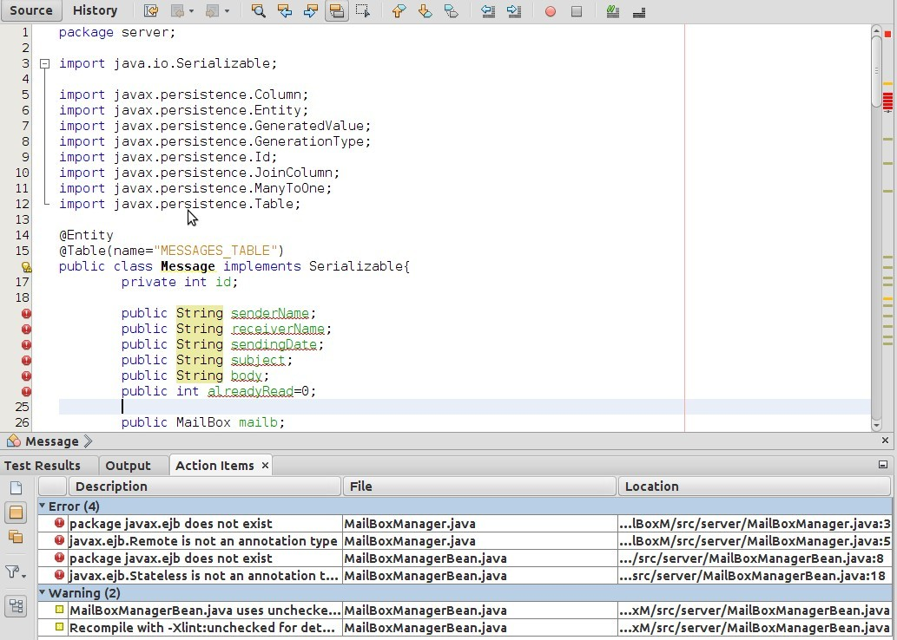
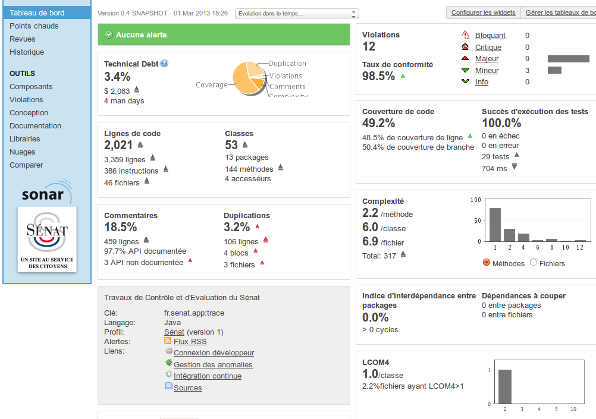
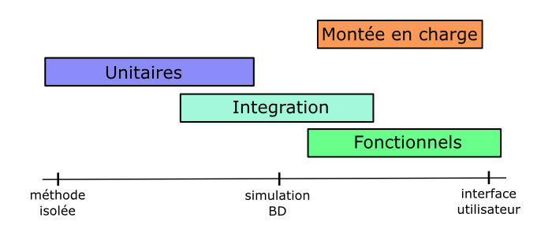
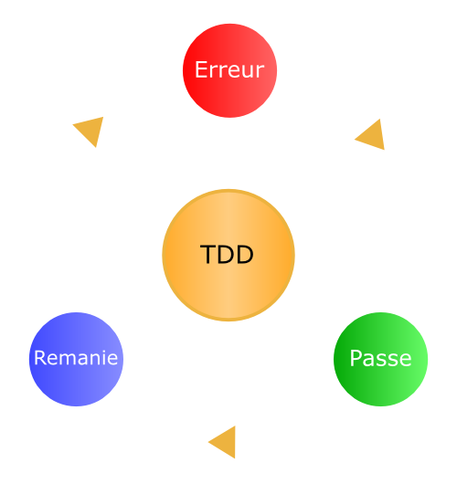

Développement Durable
Maintenabilité des applications
La vraie vie de développeur

Proposition de définition
Capacité à pouvoir maintenir une application sur le long terme et pour tout type de maintenance
Pourquoi cette présentation ?
Programmers are constantly in maintenance mode
Ce que l'on verra
- Technique
- Documentation
- Attitude
Ce que l'on ne verra pas
- Organisationnel
1 ‐ #WTF
KISS

Keep It Simple, Stupid
Code expressif / lisible
Calendar c = new GregorianCalendar();
Calendar b = j.bd();
if (b != null
&& c.get(Calendar.DAY_OF_YEAR) ==
b.get(Calendar.DAY_OF_YEAR)) {
return new BD();
}
if (joe.hasBirthday()) {
BandeDessinee gift = new BandeDessinee("Lincoln");
return gift;
}
when(joe.hasBirthday()).thenSend(gift);
2 ‐ Less Is More
Moins de fonctionnalité
Convention over configuration
- valeurs par défaut
- code spécifique / paramétrages
DRY – don't WET
Every piece of knowledge must have a single, unambiguous, authoritative representation within a system.
Comprenez ce que vous faites !
private static final long serialVersionUID = 1L;Réfléchissez à ce que vous commitez
A supprimer
import java.util.Date;
//import java.util.Date;/**
*
*/
private static final long serialVersionUID = 1L;@Override
public void setSenderEmail(String senderEmail) {
// TODO Auto-generated method stub
}/**
* $Id:$
* @author toto
*/
public int doSomething() {
//System.out.println("TOTO");
return x;
//return x*2;
}A garder
/*
* (c) Copyright 2013 Laurent Cottereau
*
* This file is part of Foobar.
* Foobar is free software: you can redistribute it and/or
* modify it under the terms of the GNU General Public
* License as published by the Free Software Foundation.
* You should have received a copy of the GNU General Public
* License along with Foobar.
* If not, see <http://www.gnu.org/licenses/>.
*/
/**
* commentaire décrivant le comportement pour qui
* ne veut pas lire le code.
* TODO penser à implémenter autre chose.
Se concentrer sur la Valeur ajoutée
Attention au choix framework/bibliothèque/API
Un cas typique
/**
* Copyright Sénat.
*/
package fr.senat.model.dosleg;
import fr.senat.model.dosleg.validator.ActiviteValide;
import fr.senat.model.senateurs.GroupePolitique;
import fr.senat.util.Constants;
import java.io.Serializable;
import java.util.HashSet;
import java.util.Set;
import javax.persistence.CascadeType;
import javax.persistence.Column;
import javax.persistence.Embedded;
import javax.persistence.Entity;
import javax.persistence.FetchType;
import javax.persistence.GeneratedValue;
import javax.persistence.GenerationType;
import javax.persistence.Id;
import javax.persistence.JoinColumn;
import javax.persistence.JoinTable;
import javax.persistence.ManyToMany;
import javax.persistence.ManyToOne;
import javax.persistence.OneToMany;
import javax.persistence.OrderBy;
import javax.validation.constraints.NotNull;
import javax.validation.constraints.Pattern;
import javax.validation.constraints.Size;
public void setGroupePolitique(final GroupePolitique groupePolitique) {
this.groupePolitique = groupePolitique;
}
public void setOrganismes(final Set<Organisme> organismes) {
this.organismes = organismes;
}
public void setLois(final Set<Loi> lois) {
this.lois = lois;
}
public void setLivrables(final Set<LivrableControle> livrables) {
this.livrables = livrables;
}
public void setActeurs(final Set<ActeurControle> acteurs) {
this.acteurs = acteurs;
}
public void setThemes(final Set<Theme> themes) {
this.themes = themes;
}
/**
* Renvoie la date à prendre en compte pour le nommage du groupe politique lié à ce contrôle. TODO vérifier cette
* règle de gestion avec S. Dubourg.
*
* @return la date à prendre en compte.
*/
private LocalDate getDateNommageGroupePolitique() {
if (isClosed()) {
return echeance.getDate();
} else {
return LocalDate.now();
}
}
/**
* Renvoie le libellé de groupe politique à la date adéquate pour ce contrôle, préfixé de l'article adéquat. Ainsi,
* un contrôle en cours prendra le nom à la date du jour alors qu'un contrôle fini prendra le nom à la date
* d'échéance.
*
* @return le libellé préfixé de l'article. <code>null</code> si le groupe politique n'est pas défini.
*/
public String getLibelleLongEtArticleGroupePolitique() {
if (groupePolitique != null) {
LocalDate d = getDateNommageGroupePolitique();
StringBuilder sb = new StringBuilder(groupePolitique.getArticle(d));
sb.append(" ");
sb.append(groupePolitique.getLibelleLong(d));
return sb.toString();
}
return null;
}
/**
* Détermine si le contrôle est fini.
*
* @return <code>true</code> si le contrôle est fini.
*/
public boolean isClosed() {
return echeance != null && echeance.getDate().isBefore(LocalDate.now());
}
/**
* Reporte d'un an le contrôle. La date de début d'activité est inchangée mais la date de report est décalée d'un an
* (année suivant le démarrage si c'est le premier report)
*/
public void reporter() {
if (canReporteControle()) {
if (programmeReport == null) {
programmeReport = programmeCreation + 1;
} else {
programmeReport++;
}
}
}
/**
* Renvoie le dernier programme d'activité du contrôle.
*
* @return le dernier programme d'activité du contrôle.
*/
public int getDernierProgramme() {
if (programmeReport == null) {
return programmeCreation;
} else {
return programmeReport;
}
}
/**
* Indique si un contrôle peut être reporté. C'est le cas si l'échéance correspond à une session strictement
* postérieure supérieure à la session de report actuelle.
*
* @return <code>true</code> si le contrôle peut être reporté. <code>false</code> sinon.
*/
public boolean canReporteControle() {
if (echeance.getDate() != null) {
return (getDernierProgramme() < echeance.getSession());
} else {
return false;
}
}
/**
* Renvoie la session correspondant à une date.
*
* @param date la date dont on cherche la session.
* @return la session, représentée par l'année de démarrage de la session (2013 pour la session 2013-2014 par
* exemple). <code>null</code> si la date en paramètre est nulle.
*/
public static Integer getSession(LocalDate date) {
if (date != null) {
if (date.getMonthOfYear() < OCTOBER) {
return date.getYear() - 1;
} else {
return date.getYear();
}
} else {
return null;
}
}
/**
* Renvoie l'année de fin d'activité du contrôle.
*
* @return l'année de fin d'activité.
*/
public int getFinActivite() {
return getDernierProgramme() + 1;
}
/**
* Définit la fin d'activité. Calcule le programme correspondant et définit éventuellement un report sur le
* contrôle.
*
* @param fin l'année de fin d'activité spécifiée dans le formulaire.
*/
public void setFinActivite(int fin) {
if (fin > getProgrammeCreation() + 1) {
setProgrammeReport(fin - 1);
} else {
setProgrammeReport(null);
}
}
@java.lang.Override
public boolean equals(final java.lang.Object o) {
if (o == this) return true;
if (!(o instanceof Controle)) return false;
final Controle other = (Controle)o;
if (!other.canEqual((java.lang.Object)this)) return false;
final java.lang.Object this$id = this.getId();
final java.lang.Object other$id = other.getId();
if (this$id == null ? other$id != null : !this$id.equals(other$id)) return false;
final java.lang.Object this$libelle = this.getLibelle();
final java.lang.Object other$libelle = other.getLibelle();
if (this$libelle == null ? other$libelle != null : !this$libelle.equals(other$libelle)) return false;
final java.lang.Object this$objet = this.getObjet();
final java.lang.Object other$objet = other.getObjet();
if (this$objet == null ? other$objet != null : !this$objet.equals(other$objet)) return false;
final java.lang.Object this$url = this.getUrl();
final java.lang.Object other$url = other.getUrl();
if (this$url == null ? other$url != null : !this$url.equals(other$url)) return false;
if (this.isInitiativeDesGroupes() != other.isInitiativeDesGroupes()) return false;
if (this.isCourDesComptes() != other.isCourDesComptes()) return false;
if (this.getProgrammeCreation() != other.getProgrammeCreation()) return false;
final java.lang.Object this$programmeReport = this.getProgrammeReport();
final java.lang.Object other$programmeReport = other.getProgrammeReport();
if (this$programmeReport == null ? other$programmeReport != null : !this$programmeReport.equals(other$programmeReport)) return false;
final java.lang.Object this$dateCreation = this.getDateCreation();
final java.lang.Object other$dateCreation = other.getDateCreation();
if (this$dateCreation == null ? other$dateCreation != null : !this$dateCreation.equals(other$dateCreation)) return false;
if (this.isCloture() != other.isCloture()) return false;
if (this.isAvecRapport() != other.isAvecRapport()) return false;
final java.lang.Object this$echeance = this.getEcheance();
final java.lang.Object other$echeance = other.getEcheance();
if (this$echeance == null ? other$echeance != null : !this$echeance.equals(other$echeance)) return false;
final java.lang.Object this$groupePolitique = this.getGroupePolitique();
final java.lang.Object other$groupePolitique = other.getGroupePolitique();
if (this$groupePolitique == null ? other$groupePolitique != null : !this$groupePolitique.equals(other$groupePolitique)) return false;
final java.lang.Object this$organismes = this.getOrganismes();
final java.lang.Object other$organismes = other.getOrganismes();
if (this$organismes == null ? other$organismes != null : !this$organismes.equals(other$organismes)) return false;
final java.lang.Object this$lois = this.getLois();
final java.lang.Object other$lois = other.getLois();
if (this$lois == null ? other$lois != null : !this$lois.equals(other$lois)) return false;
final java.lang.Object this$livrables = this.getLivrables();
final java.lang.Object other$livrables = other.getLivrables();
if (this$livrables == null ? other$livrables != null : !this$livrables.equals(other$livrables)) return false;
final java.lang.Object this$acteurs = this.getActeurs();
final java.lang.Object other$acteurs = other.getActeurs();
if (this$acteurs == null ? other$acteurs != null : !this$acteurs.equals(other$acteurs)) return false;
final java.lang.Object this$themes = this.getThemes();
final java.lang.Object other$themes = other.getThemes();
if (this$themes == null ? other$themes != null : !this$themes.equals(other$themes)) return false;
return true;
}
public boolean canEqual(final java.lang.Object other) {
return other instanceof Controle;
}
@java.lang.Override
public int hashCode() {
final int PRIME = 59;
int result = 1;
final java.lang.Object $id = this.getId();
result = result * PRIME + ($id == null ? 0 : $id.hashCode());
final java.lang.Object $libelle = this.getLibelle();
result = result * PRIME + ($libelle == null ? 0 : $libelle.hashCode());
final java.lang.Object $objet = this.getObjet();
result = result * PRIME + ($objet == null ? 0 : $objet.hashCode());
final java.lang.Object $url = this.getUrl();
result = result * PRIME + ($url == null ? 0 : $url.hashCode());
result = result * PRIME + (this.isInitiativeDesGroupes() ? 79 : 97);
result = result * PRIME + (this.isCourDesComptes() ? 79 : 97);
result = result * PRIME + this.getProgrammeCreation();
final java.lang.Object $programmeReport = this.getProgrammeReport();
result = result * PRIME + ($programmeReport == null ? 0 : $programmeReport.hashCode());
final java.lang.Object $dateCreation = this.getDateCreation();
result = result * PRIME + ($dateCreation == null ? 0 : $dateCreation.hashCode());
result = result * PRIME + (this.isCloture() ? 79 : 97);
result = result * PRIME + (this.isAvecRapport() ? 79 : 97);
final java.lang.Object $echeance = this.getEcheance();
result = result * PRIME + ($echeance == null ? 0 : $echeance.hashCode());
final java.lang.Object $groupePolitique = this.getGroupePolitique();
result = result * PRIME + ($groupePolitique == null ? 0 : $groupePolitique.hashCode());
final java.lang.Object $organismes = this.getOrganismes();
result = result * PRIME + ($organismes == null ? 0 : $organismes.hashCode());
final java.lang.Object $lois = this.getLois();
result = result * PRIME + ($lois == null ? 0 : $lois.hashCode());
final java.lang.Object $livrables = this.getLivrables();
result = result * PRIME + ($livrables == null ? 0 : $livrables.hashCode());
final java.lang.Object $acteurs = this.getActeurs();
result = result * PRIME + ($acteurs == null ? 0 : $acteurs.hashCode());
final java.lang.Object $themes = this.getThemes();
result = result * PRIME + ($themes == null ? 0 : $themes.hashCode());
return result;
}
@java.lang.Override
public java.lang.String toString() {
return "Controle(id=" + this.getId() + ", libelle=" + this.getLibelle() + ", objet=" + this.getObjet() + ", url=" + this.getUrl() + ", initiativeDesGroupes=" + this.isInitiativeDesGroupes() + ", courDesComptes=" + this.isCourDesComptes() + ", programmeCreation=" + this.getProgrammeCreation() + ", programmeReport=" + this.getProgrammeReport() + ", dateCreation=" + this.getDateCreation() + ", cloture=" + this.isCloture() + ", avecRapport=" + this.isAvecRapport() + ", echeance=" + this.getEcheance() + ")";
}
}
Utilisation simpliste
<dependency>
<groupId>org.projectlombok</groupId>
<artifactId>lombok</artifactId>
<version>1.12.6</version>
<scope>provided</scope>
</dependency>
Les plus évidentes
@ToString@EqualsAndHashCode@Getter(lazy=true)@Setter@RequiredArgsConstructor@Data
Gain


D'autres exemples
@Delegate@Value@Log@Builder
SuperHero.builder().name("Superman").from("Krypton").alias("Clark").build();Points d'attention
- prise en main
- code non maîtrisé
- intégration aux outils
- debug
Et les optimisations de performances ?
D'autres s'en préoccupent mieux que vous !
La modération doit être le premier soin de l'homme.
function(a,b,c,d){d+=c;return[d<0|a&b<<
d?a=parseInt((a|b<<c).toString(d=32,b=new Date&2|1)
.replace('v',''),d):a|b<<d,a,b,d]}
140byt.es3 ‐ Votre code est votre documentation
Dans le code
javadocTODO- contournements / hacks
Gestionnaire de tickets

Gestionnaire de versions
$:~/trace$ git log --pretty=oneline --abbrev-commit
5ab30fb réduction du champ d'application d'une règle CSS
pour les vignettes vidéo
231195a crebas.sql représente maintenant l'état de la
dernière version de la base
31c15dd #1996 - léger espace autour d'une image dans un
datatable-ui
ca7b84b on replace l'onglet acteurs entre les onglets
organisation et résultat
e0b5cf9 suppression de l'onglet contexte (élément mis
dans l'onglet détails)Pour le reste
Simple – Court – Facile
- Wiki
- fichier
README
Qu'y trouve-t-on ?
Point d'entrée unique
- Description haut niveau
- Contacts
- Installation et Environnements
- Changelog
- Catchall
4 ‐ Prenez vos responsabilités
Théorie des fenêtres brisées
Soyez vigilants

Compilateur
Note : Foo() in interface FooBase has been deprecated.
Note : Foo.java uses unchecked or unsafe operations.
javac -nowarn
javac -Xlint -Werror
IDE

Logs
- Nombreuses API
- Maîtrise nécessaire
- Suivez-les
Plateforme Qualité

Quoi faire ?
- Analyser
- Corriger OU repousser OU ne pas traiter
- Cacher le message
- Documenter
Remaniement
Changer la structure sans changer le fonctionnel
Tests automatisés

Test Driven Development

Bonnes pratiques
- C'est du code
- Niveau de cloisonnement
- Jeu de données
- Documentation
Idées de TP
- Ajouter lombok sur classes métier
- Nettoyer son projet
- Tests unitaires
- Portabilité du binaire
- Echange des projets : stratégie de reprise
- Audit de résultats Sonar et priorisation des corrections
Pour aller plus loin
- Pratiquer
- Des liens dans cette présentation
- Des lectures
- Le mouvement des artisans codeurs
Crédits
- Logiciels : reveal.js, inkscape, simple icons, diagram.ly et wordle
- Photos : F. Mathé, Dilbert.com, Wikimedia Commons, OCTO, aaa productions, Dan Leech, obinoobie , ivadeath, rooster88fan, amagill, pablogrb, kogakure et Nemo
Any fool can write code that a computer can understand. Good programmers write code that humans can understand.